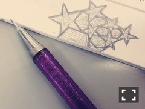
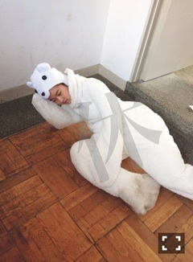
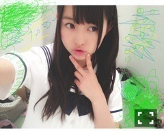

| 2013/06 11 Tue | 440回目*marika |

作りたい作りたい作りたい作りたい
...ハンドメイド意欲湧いてきた

なんか作ろう←
あ、そうなのそうなの
親友がね、
プリンシパル大阪公演の前に
(研修旅行終わりに)
渡す予定だったらしいのですが、
すっかり忘れてたらしく、
公演終わりに学校でもらったんです。
ブローチもらったんです。
手作りの。
そのブローチに
ちっちゃい紙が挟んであるんです。
おまもりって書いてあるんです。
その場で泣いてしまった。
いつもありがとう親友ちゃんよ。
そのブローチは
私服に付けられたらなあーなんて
思います^^ふふふへへへへ
.........
 しろくま先輩は
しろくま先輩は
お元気でしょうか...？気になります。


まりかちゃんの耳は、
嬉しくなると真っ赤になるの？
けへっっ☆
アニメはみますか？
みるなどんなん？
あんまり見てない。
おすすめありますか！
大阪に遊びに来たりする
予定はないのー？
今回も握手会大阪でやらんよね><
プライベートでは最近行ってないなあ。
友達に会いたいっ
今まできた制服や衣装で
一番お気に入りなのはどれなのかな？
ぐるぐるカーテンすき！
マネキンのセーラー服もすき！
制服は夏服がすきかな。
3rdのも今回のもすき。
荒ぶる確率高い
メンバーは誰ですか？
楽屋でしょっちゅう奇声
あげてるのはゆったん。
でも、うん。
みんな誰かしら荒ぶってるかな。
普段のレッスンって、
ダンスレッスンの他は
ヴォーカルトレーニングや
演技のレッスンとかもするの？
初期はよくやってたけど、
最近はしてないかなあ。
ガールズルールのダンスで
好きな振りってどこかな？
2番Aメロの振りかわいいよ！
全握のミニライブ楽しみね♪
廊下で荒ぶる写メいいね
誰が撮ったのかな？
かなりん照
MV撮った監督さんって
個人PV「ナイフ」撮った柳沢監督？
そうです！
今回もお世話になりました

乃木どこのななみん新郎と
まりかのツーショットは撮った？
並んで撮ったよ！
でも画像がスタッフさんの
ケータイああああ
ななみの耳出してるのすきなんです。
玲香も綺麗でしたなあ。
ウェディングドレスっていいなあ。
.........
最近毎日聴いてるのは
空想委員会さんの
波動砲ガールフレンドです。

↑
この緑のぐるぐるした落書き見て、
「あーまりかは苔をイメージして
この緑のぐるぐるしたの描いたんだな」
と思ったあなたは完全にまりっ会です。
え、わかりにくい？え？
俺私まりっ会だけど
苔だとは思わなかった？
芝生だと思った？

そんなあなた残念賞

じゃじゃじゃーん
明日はある撮影です。
朝早いよう。
しっかり寝なきゃー
おやすみなさい

まりか
コメント(294)
2013/06/11 21:00